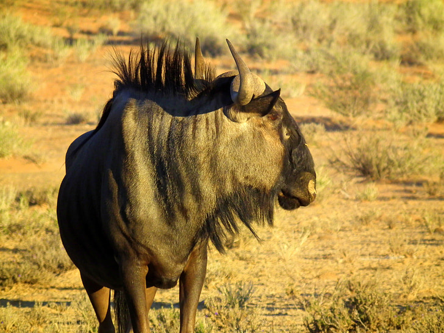
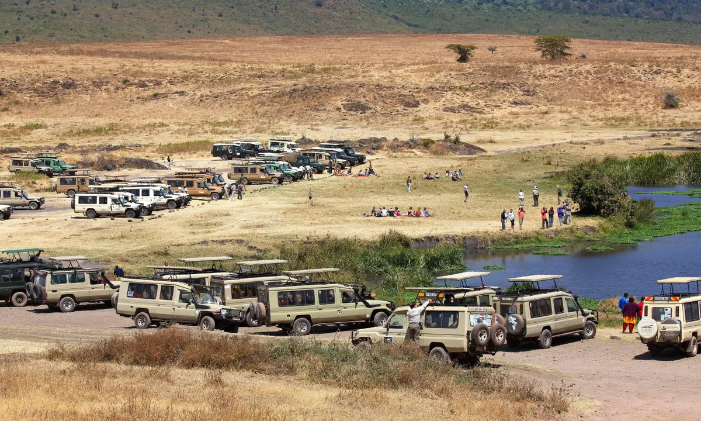
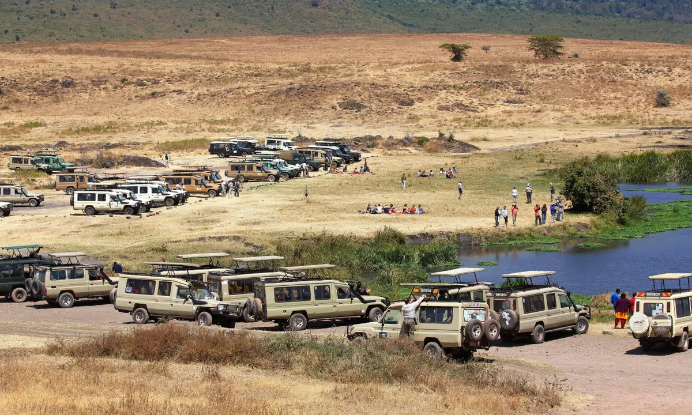
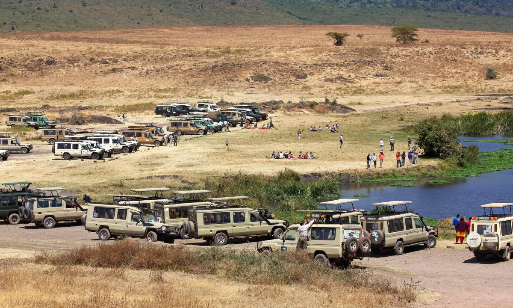

Los personajes que lo habitan
La reserva del Serengeti es el hogar de una gran variedad de animales salvajes, incluyendo leones,
leopardos, elefantes, cebras, jirafas, ñus y muchos más. La tribu masai también habita en las
cercanías
de la reserva y es conocida por su estilo de vida nómada y su vestimenta tradicional. Además, hay
una
gran cantidad de guías turísticos y personal de apoyo que trabajan en la reserva para garantizar la
seguridad y la comodidad de los visitantes.
Especies que hay
La Reserva Natural del Serengeti es conocida por su biodiversidad única y su rica vida salvaje.
La reserva
es el hogar de una gran variedad de animales y plantas, muchas de las cuales son endémicas o
exclusivas de
la región.
Uno de los animales más icónicos del Serengeti es el león. La reserva es el hogar de la mayor
población de
leones de toda África, y es conocida por ser un excelente lugar para observarlos. También se
pueden
encontrar otros grandes felinos, como leopardos y guepardos, así como hienas, chacales y otros
carnívoros.
La migración anual de los ñus y otros herbívoros es otro de los espectáculos más impresionantes
de la vida
salvaje en el Serengeti. Cada año, millones de animales se desplazan a través de las llanuras de
la reserva
en busca de pastos frescos. Esto atrae a depredadores como leones y guepardos, y también
proporciona
alimento para una gran variedad de animales carroñeros, como buitres y hienas.
Además de los grandes mamíferos, la reserva también es el hogar de una gran variedad de aves,
reptiles,
anfibios e insectos. Se han registrado más de 500 especies de aves en la reserva, incluyendo
algunas
endémicas como el turaco del Serengeti y el gorrión de cabeza negra de Serengeti.
En cuanto a la flora, el Serengeti es una mezcla de sabana, bosques y zonas de pastizales. Entre
las plantas
más representativas se encuentran la acacia, la baobab, la palmera de aceite y la hierba alta
que es la
principal fuente de alimento para los animales herbívoros.
En resumen, la biodiversidad del Serengeti es única y es un verdadero tesoro natural de África,
por lo que
se han implementado medidas de conservación para garantizar su preservación y el bienestar de
los animales
que la habitan.
¿Cuáles son las especies de animales más comunes de la reserva?
La Reserva Natural del Serengeti es conocida por su diversidad y cantidad de vida silvestre. Algunas
de las
especies más comunes que se pueden encontrar en la reserva son:
León:
El Serengeti es famoso por ser uno de los mejores lugares del mundo para
ver leones. Se
estima que hay
más de 3,000 leones en la reserva.

Ñu:
El ñu es el animal más icónico de la reserva. Es conocido por su gran
migración anual
en
busca de pastos
frescos. Se estima que más de 1,5 millones de ñus viajan a través del Serengeti cada
año.
Guepardo:
El guepardo es el animal terrestre más rápido del mundo y se puede
encontrar en la
reserva.
 Elefante:
El elefante africano también habita en el Serengeti. Aunque su número es
menor que en
otras
reservas, aún es posible verlos en su hábitat natural.
Elefante:
El elefante africano también habita en el Serengeti. Aunque su número es
menor que en
otras
reservas, aún es posible verlos en su hábitat natural.
 Jirafa:
Las jirafas también habitan en la reserva, y se pueden encontrar en las
zonas
arboladas.
Jirafa:
Las jirafas también habitan en la reserva, y se pueden encontrar en las
zonas
arboladas.
 Hiena:
Hay tres especies de hienas en la reserva, la más común es la hiena
manchada.
Hiena:
Hay tres especies de hienas en la reserva, la más común es la hiena
manchada.
 Búfalo:
Los búfalos africanos también habitan en la reserva y forman grandes
manadas.
Búfalo:
Los búfalos africanos también habitan en la reserva y forman grandes
manadas.
Estas son solo algunas de las especies más comunes en el Serengeti. Además, se pueden encontrar
muchas otras especies de mamíferos, aves, reptiles e insectos, lo que hace que la reserva sea un
verdadero paraíso para los amantes de la naturaleza y la vida silvestre.
Tribu Masai
Los masai son conocidos por su alta estatura y sus saltos verticales. De hecho, los saltos masai son una
tradición importante y son realizados por los jóvenes como una prueba de valor y fuerza. En estos saltos, los
hombres saltan tan alto como pueden sin tocar el suelo con los talones.
Los masai tienen una tradición única en la que los jóvenes deben pasar por una ceremonia de circuncisión y
después pasar varios años viviendo en un campamento aparte de su familia. Durante este tiempo, aprenden las
habilidades y tradiciones necesarias para convertirse en guerreros masai y proteger a su tribu.
A diferencia de muchas culturas africanas, los masai han mantenido su estilo de vida semi-nómada y siguen siendo
muy dependientes de sus rebaños de ganado. Son conocidos por su habilidad para vivir en armonía con la
naturaleza y utilizar los recursos disponibles de manera sostenible.
La tribu masai es una de las culturas más conocidas y reconocidas en África.
Habitan en una
gran
extensión de tierra en Kenia y Tanzania, incluyendo la región cercana a la Reserva Natural
del Serengeti. Los masai son
conocidos por su estilo de vida nómada, tradicionalmente dedicado a la cría de ganado. Viven
en casas hechas de ramas,
barro y estiércol de ganado llamadas "manyattas", que son fáciles de desmontar y
transportar.
La vestimenta tradicional de los masai se compone de túnicas de colores
brillantes y
vistosos adornos, como joyas de
cuentas y collares de metal. Los hombres masai también son conocidos por su práctica de
saltar, una especie de
competición en la que se miden en su capacidad para saltar lo más alto posible.
Los masai tienen una rica cultura oral, transmitiendo historias y leyendas de
generación en
generación. También son
conocidos por su práctica de la caza de leones como parte de su rito de iniciación en la
edad adulta. Sin embargo, esta
práctica ha sido criticada por grupos de conservación de animales y ha sido objeto de debate
en los últimos años.
Los masai han sido objeto de estudio y admiración por parte de antropólogos,
turistas y
otros visitantes que viajan a
esta región de África. A pesar de los cambios y desafíos que han enfrentado a lo largo de
los años, los masai continúan
preservando su cultura y forma de vida tradicionales mientras se adaptan a un mundo en
constante cambio.
Turistas
 La Reserva Natural del Serengeti es uno de los destinos turísticos más populares de Tanzania
y de toda África. El turismo en el Serengeti se centra en el avistamiento de animales
salvajes, especialmente durante la migración anual de los ñus y otros herbívoros en busca de
pastos frescos. Durante este período, se pueden observar grandes concentraciones de animales
que se desplazan por las llanuras del Serengeti, lo que atrae a miles de turistas de todo el
mundo.
El turismo en el Serengeti es un motor económico importante para la región. La mayoría de
los visitantes se alojan en lodges y campamentos turísticos ubicados dentro o en los
alrededores de la reserva. Estos alojamientos varían en comodidades y precios, desde
campamentos básicos hasta lodges de lujo con todas las comodidades modernas.
La Reserva Natural del Serengeti es uno de los destinos turísticos más populares de Tanzania
y de toda África. El turismo en el Serengeti se centra en el avistamiento de animales
salvajes, especialmente durante la migración anual de los ñus y otros herbívoros en busca de
pastos frescos. Durante este período, se pueden observar grandes concentraciones de animales
que se desplazan por las llanuras del Serengeti, lo que atrae a miles de turistas de todo el
mundo.
El turismo en el Serengeti es un motor económico importante para la región. La mayoría de
los visitantes se alojan en lodges y campamentos turísticos ubicados dentro o en los
alrededores de la reserva. Estos alojamientos varían en comodidades y precios, desde
campamentos básicos hasta lodges de lujo con todas las comodidades modernas.
 
Sin embargo, el turismo en el Serengeti también ha sido objeto de críticas por el impacto
que puede tener en la reserva natural y en la cultura de los masai (link a un artículo de
noticias). El turismo excesivo puede ser perjudicial para la vida salvaje y la conservación
de la reserva, y también puede afectar negativamente a las comunidades locales que dependen
de la tierra y los recursos naturales. Por lo tanto, es importante que se implementen
políticas de turismo sostenible para garantizar que la reserva natural y las comunidades
locales se beneficien del turismo sin dañar su entorno natural y cultural.

Sin embargo, el turismo en el Serengeti también ha sido objeto de críticas por el impacto
que puede tener en la reserva natural y en la cultura de los masai (link a un artículo de
noticias). El turismo excesivo puede ser perjudicial para la vida salvaje y la conservación
de la reserva, y también puede afectar negativamente a las comunidades locales que dependen
de la tierra y los recursos naturales. Por lo tanto, es importante que se implementen
políticas de turismo sostenible para garantizar que la reserva natural y las comunidades
locales se beneficien del turismo sin dañar su entorno natural y cultural.
Además del avistamiento de animales, hay muchas otras actividades que se ofrecen en el
Serengeti, como safaris a pie, paseos en globo aerostático, visitas a aldeas masai cercanas,
entre otras. Los tours en globo aerostático son particularmente populares, ya que permiten a los
visitantes tener una vista panorámica de la reserva y de la vida salvaje desde una perspectiva
única. Consulta más información aquí.
Especies que hay
La Reserva Natural del Serengeti es conocida por su biodiversidad única y su rica vida salvaje. La reserva es el hogar de una gran variedad de animales y plantas, muchas de las cuales son endémicas o exclusivas de la región. Uno de los animales más icónicos del Serengeti es el león. La reserva es el hogar de la mayor población de leones de toda África, y es conocida por ser un excelente lugar para observarlos. También se pueden encontrar otros grandes felinos, como leopardos y guepardos, así como hienas, chacales y otros carnívoros. La migración anual de los ñus y otros herbívoros es otro de los espectáculos más impresionantes de la vida salvaje en el Serengeti. Cada año, millones de animales se desplazan a través de las llanuras de la reserva en busca de pastos frescos. Esto atrae a depredadores como leones y guepardos, y también proporciona alimento para una gran variedad de animales carroñeros, como buitres y hienas. Además de los grandes mamíferos, la reserva también es el hogar de una gran variedad de aves, reptiles, anfibios e insectos. Se han registrado más de 500 especies de aves en la reserva, incluyendo algunas endémicas como el turaco del Serengeti y el gorrión de cabeza negra de Serengeti. En cuanto a la flora, el Serengeti es una mezcla de sabana, bosques y zonas de pastizales. Entre las plantas más representativas se encuentran la acacia, la baobab, la palmera de aceite y la hierba alta que es la principal fuente de alimento para los animales herbívoros. En resumen, la biodiversidad del Serengeti es única y es un verdadero tesoro natural de África, por lo que se han implementado medidas de conservación para garantizar su preservación y el bienestar de los animales que la habitan.
¿Cuáles son las especies de animales más comunes de la reserva?
La Reserva Natural del Serengeti es conocida por su diversidad y cantidad de vida silvestre. Algunas de las especies más comunes que se pueden encontrar en la reserva son:
Estas son solo algunas de las especies más comunes en el Serengeti. Además, se pueden encontrar muchas otras especies de mamíferos, aves, reptiles e insectos, lo que hace que la reserva sea un verdadero paraíso para los amantes de la naturaleza y la vida silvestre.
Tribu Masai
Los masai son conocidos por su alta estatura y sus saltos verticales. De hecho, los saltos masai son una tradición importante y son realizados por los jóvenes como una prueba de valor y fuerza. En estos saltos, los hombres saltan tan alto como pueden sin tocar el suelo con los talones.
Los masai tienen una tradición única en la que los jóvenes deben pasar por una ceremonia de circuncisión y después pasar varios años viviendo en un campamento aparte de su familia. Durante este tiempo, aprenden las habilidades y tradiciones necesarias para convertirse en guerreros masai y proteger a su tribu.
A diferencia de muchas culturas africanas, los masai han mantenido su estilo de vida semi-nómada y siguen siendo muy dependientes de sus rebaños de ganado. Son conocidos por su habilidad para vivir en armonía con la naturaleza y utilizar los recursos disponibles de manera sostenible.
Turistas

Además del avistamiento de animales, hay muchas otras actividades que se ofrecen en el Serengeti, como safaris a pie, paseos en globo aerostático, visitas a aldeas masai cercanas, entre otras. Los tours en globo aerostático son particularmente populares, ya que permiten a los visitantes tener una vista panorámica de la reserva y de la vida salvaje desde una perspectiva única. Consulta más información aquí.